This is a compendium of questions arisen on the use of the tidyterra package and the potential solutions to it (mostly related with the use of terra and ggplot2 at this stage). You can ask for help or search previous questions in the following links.
- Issues: https://github.com/dieghernan/tidyterra/issues
- Discussions: https://github.com/dieghernan/tidyterra/discussions
NA values are shown in gray color
This is the default behavior produced by the ggplot2
package. tidyterra color scales (i.e.,
scale_fill_whitebox_c(), etc.), has by default the
parameter na.value set to NA, that prevents NA
values to be plotted.
library(terra)
library(tidyterra)
library(ggplot2)
library(geodata)
# Get a raster data
r <- geodata::elevation_30s("CHE", ".")
# Default
def <- ggplot() +
geom_spatraster(data = r)
def +
labs(
title = "Default on ggplot2",
subtitle = "NA values in grey"
)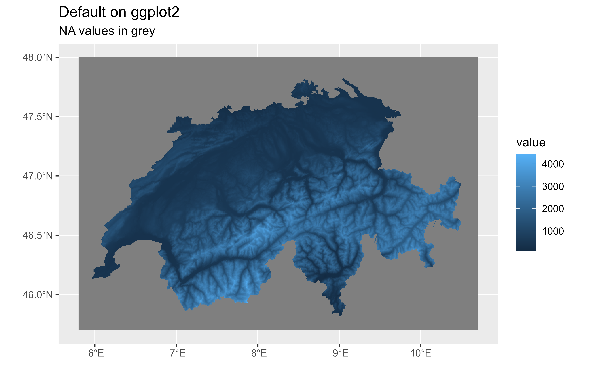
# Modify with scales
def +
scale_fill_continuous(na.value = NA) +
labs(
title = "Default colors on ggplot2",
subtitle = "But NAs are not plotted"
)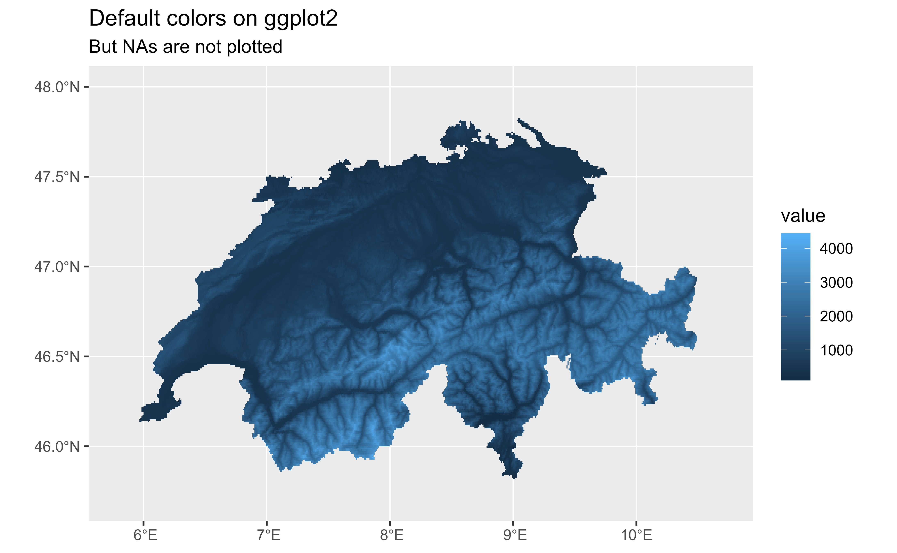
# Use a different scale provided by ggplot2
def +
scale_fill_viridis_c(na.value = "orange") +
labs(
title = "Use any fill_* scale of ggplot2",
subtitle = "Note that na.value = 'orange'"
)
Labeling contours
Thanks to fortify.SpatRaster() you can use your
SpatRaster straight away with the metR package. Use the
parameter(s) bins/binwidth/breaks to align both labels and
lines:
library(terra)
library(tidyterra)
library(ggplot2)
library(metR)
r <- geodata::elevation_30s("CHE", ".")
names(r) <- "elev"
ggplot(r) +
geom_spatraster_contour(data = r) +
geom_text_contour(
aes(x, y, z = elev),
check_overlap = TRUE,
stroke = 0.2,
stroke.colour = "white"
) +
labs(
title = "Labelling contours",
width = 2,
x = "", y = ""
)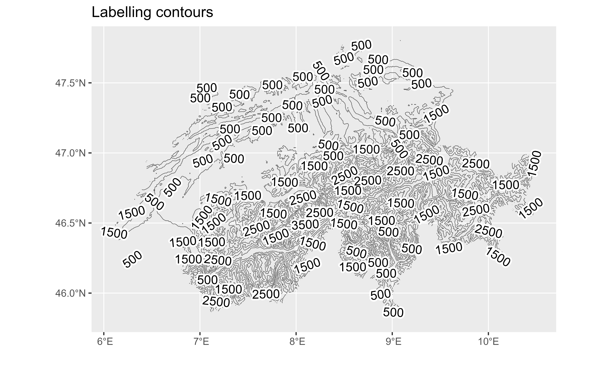
# Modify number or bins
ggplot(r) +
geom_spatraster_contour(
data = r,
binwidth = 1000
) +
geom_text_contour(
aes(x, y, z = elev),
binwidth = 1000,
check_overlap = TRUE,
stroke = 0.2, stroke.colour = "white"
) +
labs(
title = "Labelling contours",
subtitle = "Aligning breaks",
width = 2,
x = "", y = ""
)
Using a different color scale
Since tidyterra leverages on ggplot2, please refer to ggplot2 use of scales:
library(terra)
library(tidyterra)
library(ggplot2)
r <- geodata::elevation_30s("CHE", ".")
# Hillshade with grey colors
slope <- terrain(r, "slope", unit = "radians")
aspect <- terrain(r, "aspect", unit = "radians")
hill <- shade(slope, aspect, 10, 340)
ggplot() +
geom_spatraster(data = hill, show.legend = FALSE) +
# Note the scale, grey colours
scale_fill_gradientn(colours = grey(0:100 / 100), na.value = NA) +
labs(title = "A hillshade plot with grey colors")
Can I change the default palette of my maps?
Yes, use options("ggplot2.continuous.fill") to modify
the default colors on your session.
library(terra)
library(tidyterra)
library(ggplot2)
r <- geodata::elevation_30s("CHE", ".")
p <- ggplot() +
geom_spatraster(data = r)
# Set options
tmp <- getOption("ggplot2.continuous.fill") # store current setting
options(ggplot2.continuous.fill = scale_fill_terrain_c)
p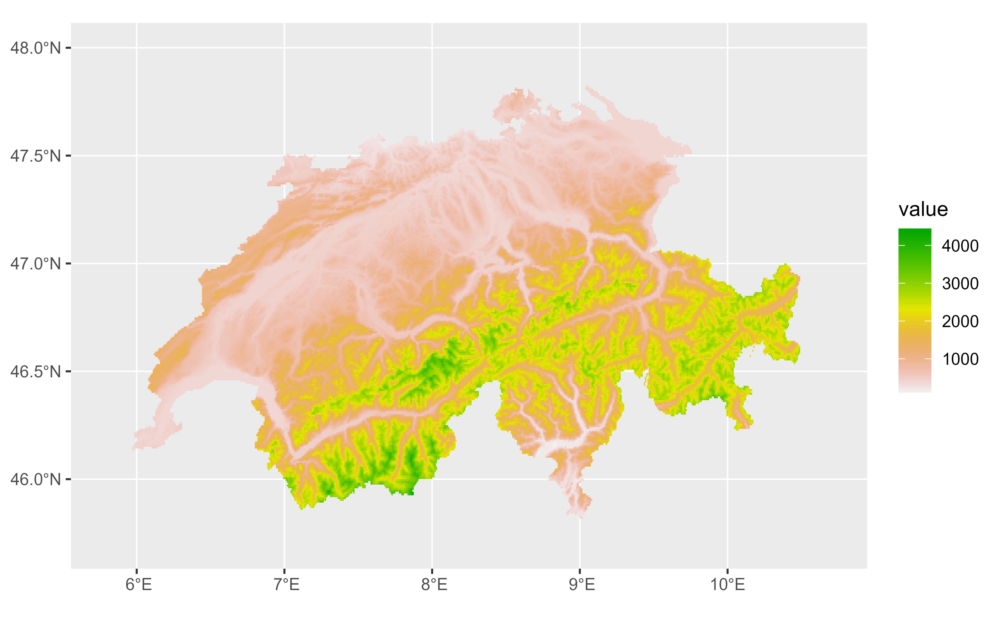
# restore previous setting
options(ggplot2.continuous.fill = tmp)
p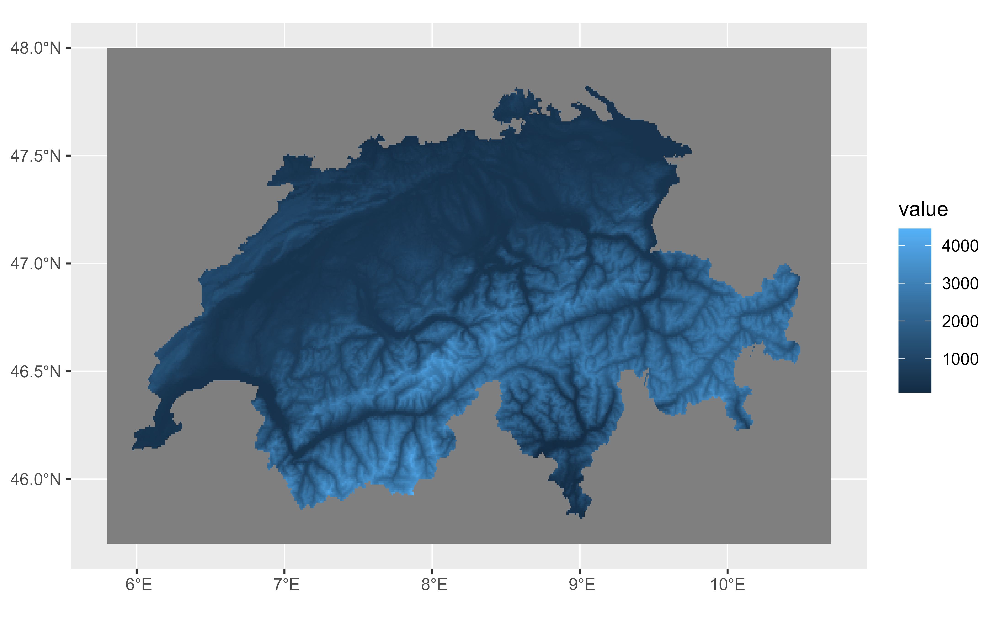
My map tiles are blurry
This is probably related with the tile itself rather than the
package. Most base tiles are provided in EPSG:3857, so
check first if your tile has this CRS and not a different one. Not
having EPSG:3857 may be an indication that the tile has
been reprojected, implied some sort of sampling that causes the
blurriness on your data. Also, modify the parameter maxcell
to avoid resampling and force the ggplot2 map to be on
EPSG:3857 with
ggplot2::coord_sf(crs = 3857):
library(terra)
library(tidyterra)
library(ggplot2)
library(sf)
library(maptiles)
# Get a tile from a point on sf format
p <- st_point(c(-97.09, 31.53)) %>%
st_sfc(crs = 4326) %>%
st_buffer(750)
tile1 <- get_tiles(p, provider = "Stamen.Terrain", zoom = 14, cachedir = ".")
ggplot() +
geom_spatraster_rgb(data = tile1) +
geom_sf(data = p, fill = NA) +
labs(title = "This is a bit blurry...")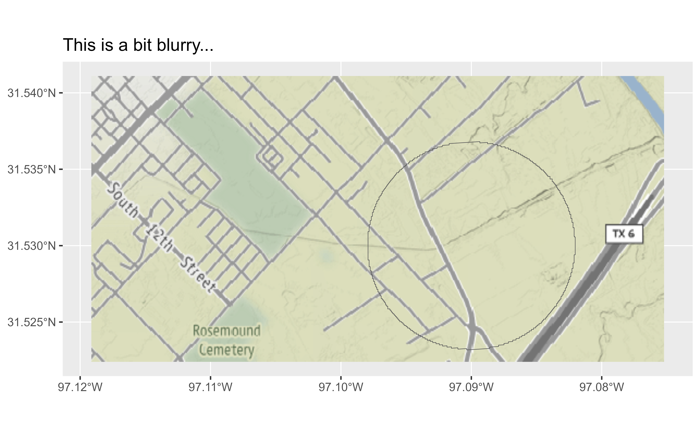
st_crs(tile1)$epsg
#> [1] 4326
# The tile was in EPSG 4326
# get tile in 3857
p2 <- st_transform(p, 3857)
tile2 <- get_tiles(p2, provider = "Stamen.Terrain", zoom = 14, cachedir = ".")
st_crs(tile2)$epsg
#> [1] 3857
# Now the tile is EPSG:3857
ggplot() +
geom_spatraster_rgb(data = tile2, maxcell = Inf) +
geom_sf(data = p, fill = NA) +
# Force crs to be 3857
coord_sf(crs = 3857) +
labs(
title = "See the difference?",
subtitle = "Init crs=3857 and maxcell modified"
)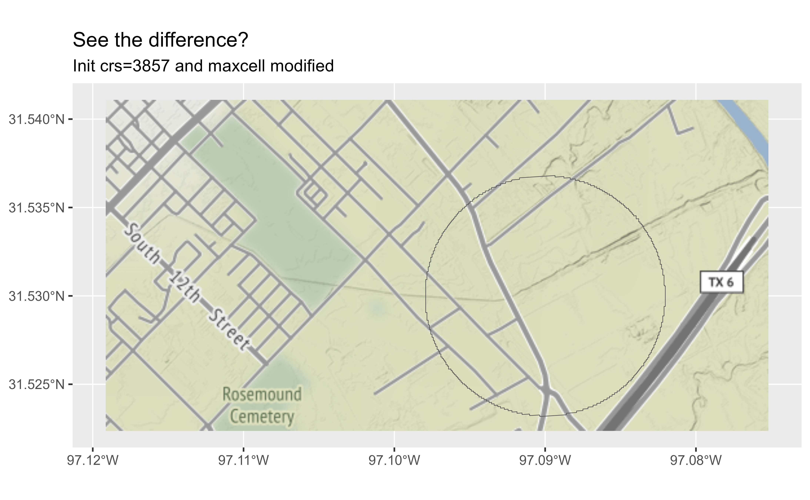
Avoid degrees labeling on axis
Again, this is the ggplot2 default, but can be
modified with ggplot2::coord_sf(datum) argument:
library(terra)
library(tidyterra)
library(ggplot2)
library(geodata)
r <- geodata::elevation_30s("CHE", ".")
# Project to 3035
r2 <- project(r, pull_crs(3035))
ggplot() +
geom_spatraster(data = r2) +
labs(
title = "Axis auto-converted to lon/lat",
subtitle = "But SpatRaster is EPSG:3035"
)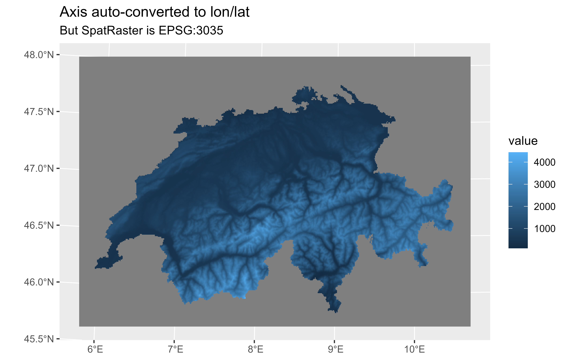
# Use datum
ggplot() +
geom_spatraster(data = r2) +
coord_sf(datum = pull_crs(r2)) +
labs(
title = "Axis on the units of the SpatRaster",
subtitle = "EPSG:3035"
)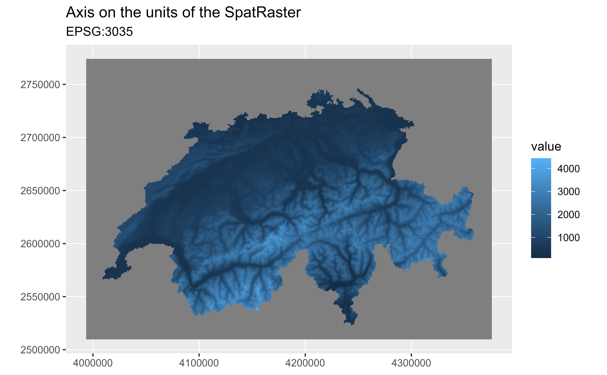
Modifying the number of breaks on axis
The best option is to pass your custom breaks to
ggplot2::scale_x_continous() or
ggplot2::scale_y_continous():
library(terra)
library(tidyterra)
library(ggplot2)
library(geodata)
r <- geodata::elevation_30s("CHE", ".")
ggplot() +
geom_spatraster(data = r) +
labs(title = "Default axis breaks")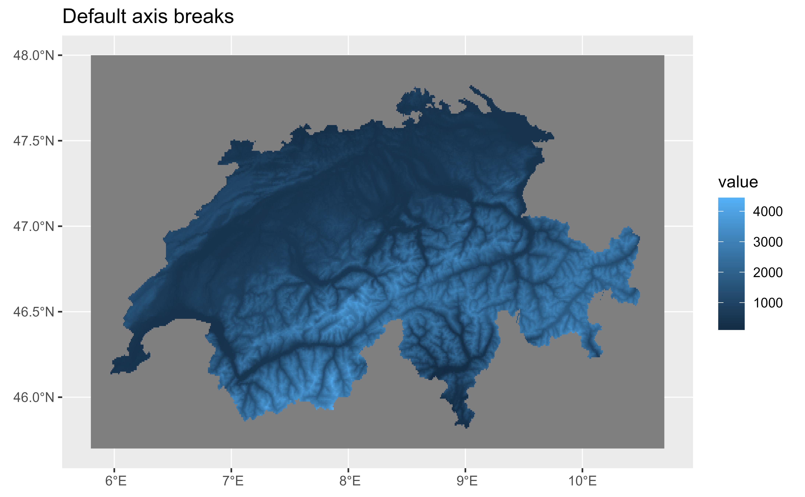
# Modify x breaks
# Get extent
ext <- as.vector(ext(r))
br <- seq(ext["xmin"], ext["xmax"], length.out = 3)
ggplot() +
geom_spatraster(data = r) +
scale_x_continuous(breaks = br) +
labs(title = "Three breaks")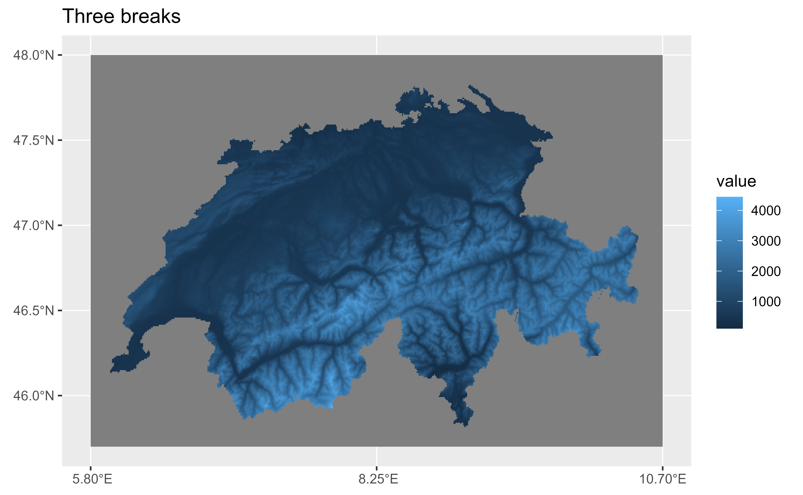